Best New Sports Cars of 2024 and 2025
If you're a car lover looking to satisfy your desires for something fun to drive and flashy, these sports cars are our top picks.
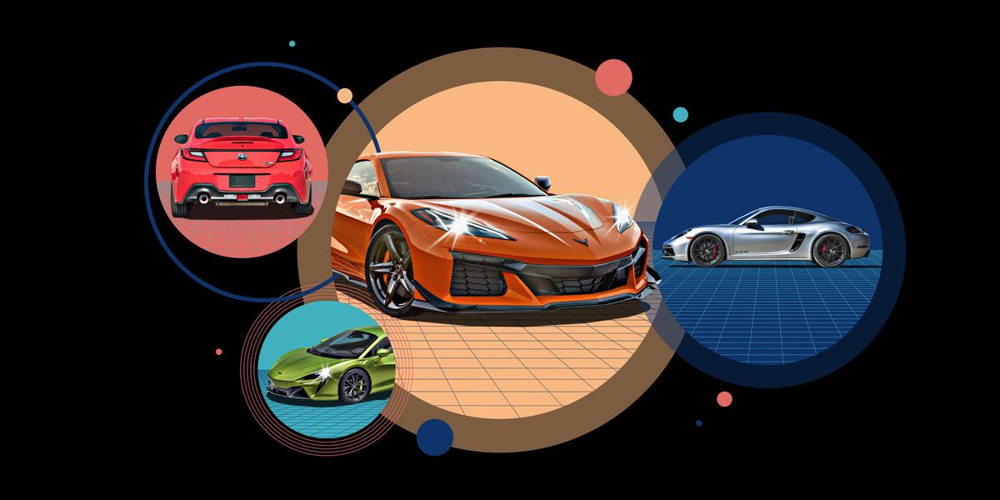
Sports cars deliver a level of driving entertainment that's inspiring to enthusiasts like us; traditional needs, such as fuel economy, cargo space, and in some instances, rear seats, take second fiddle to driver engagement and grin-inducing acceleration and handling. Sports cars come in varying degrees of thrill, running the gamut from the lightweight, low-powered Mazda MX-5 Miata to the pricey but powerful Porsche 911 Turbo. Despite their differences, these two sports cars, like almost all of the vehicles in this segment, share a common thread: driver satisfaction. To draw a line in the sand, we split sport compacts such as the Honda Civic Type R and Hyundai Elantra N, into their own hatchback and small car segments, respectively. As the MX-5 Miata is any indication, there's more to making our Editor's Choice list in this field than loads of horsepower. The scales that make a great sports car require balance, and the best sports cars are as thrilling on public roads as they are on private race tracks. There's no set equation for the perfect sports car, but in order to find the best out there, we measure every one of these machines on the test track to help us determine the models that split the difference between on-road comfort and tarmac-tearing performance. The sports cars on our 2023 Editor's Choice list exemplify are more than just fun to drive; these vehicles share the fundamental qualities that separate great cars from merely good ones.
Chevrolet Camaro ZL1
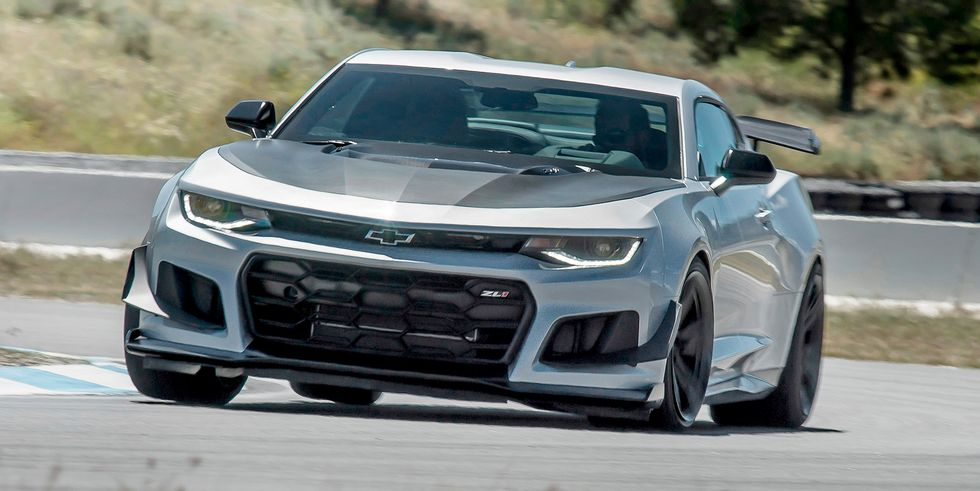
The Chevrolet Camaro ZL1 walks the thin line that separates where the everyday meets the racetrack. Using the everyday Camaro (reviewed separately) as a building block, the tornado that is the ZL1 makes the mighty 455-hp Camaro LT1 and SS trims feel like comparative wind gusts. Credit the ZL1's trim-exclusive 650-hp supercharged V-8, as well as its wide Goodyear F1 SuperCar tires that are as sticky as s'mores. An available 1LE performance package awakes an even mightier beast, with the package adding even wider and stickier tires, adjustable camber plates at each corner, and Multimatic's Dynamic Suspension Spool Valve dampers. Think of the Camaro ZL1 as a NASCAR Cup Series racer for the street.
Chevrolet Corvette
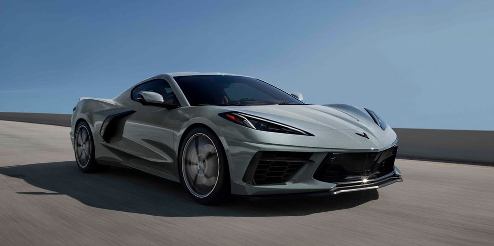
With supercar performance, an affordable price tag, and flashy styling, the 2023 Chevrolet Corvette honors the nameplate's decades-old status as an automotive icon—but with a mid-engine twist. The current C8 is the first generation to have its naturally aspirated V-8 engine mounted behind the passenger compartment, which boosts Chevy's halo sports car into the realm of exotic machinery. Its sharp handling and explosive acceleration are a match for sports cars costing tens of thousands more, but it's also comfortable and refined enough to drive cross-country. The C8 is offered as both a convertible and a coupe, and the hardtop model has a roof panel that can be lifted off to allow the sun to shine in. Its cabin is cozy but comfortable, and there's adequate trunk storage for groceries or luggage, making the Corvette an easy sports car to live with on a daily basis. We're charmed by this perennial 10Best award winner, and we think you will be too.
Chevrolet Corvette Z06
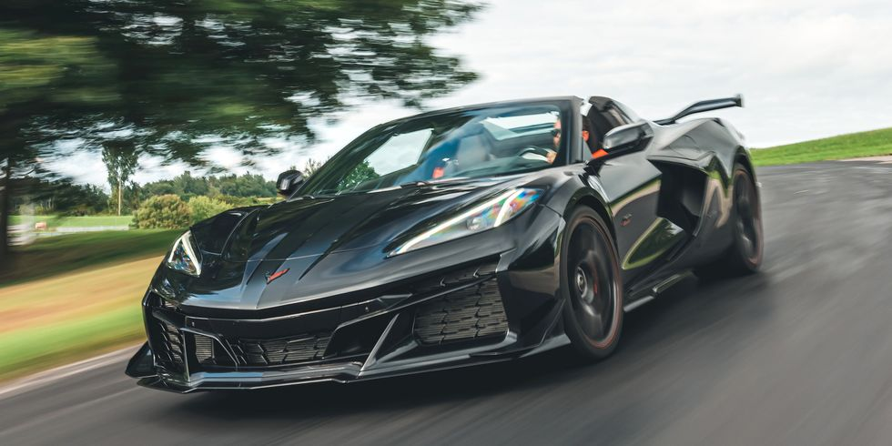
The 2023 Chevy Corvette Z06 elevates the iconic nameplate into territory occupied by exotics from Ferrari and Lamborghini. With the engine now located behind the driver, it looks unlike any Z06 seen before. Not only is it considerably wider than the regular Corvette Stingray, but it also boasts bigger air intakes and a unique rear wing. Thanks to a flat-plane crankshaft, the new Z06's naturally aspirated 5.5-liter V-8 doesn't sound like any Vette that's come before, and it blasted the car to 60 mph in just 2.6 seconds at our test track. While it inherits the best amenities and technology from the Stingray, its performance and handling have been heightened and sharpened. Chevy switched to a mid-engine layout to make the C8 Corvette a supercar that more folks can afford, and the 2023 Corvette Z06 promises to embarrass more than a few people driving insanely expensive supercars when they meet at a racetrack. We were so impressed by the z06 that we named it to our 2023 10Best cars list alongside the Stingray.
Ford Mustang
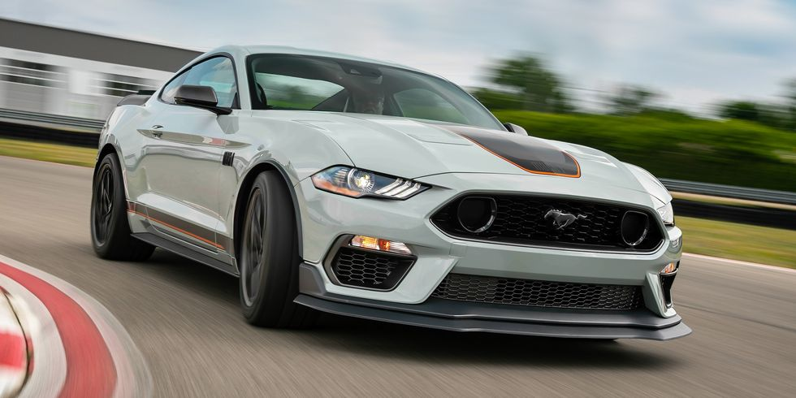
For more than 55 years, the Ford Mustang has continued to evolve into a more sophisticated steed. This iteration comes standard with a 310-hp turbocharged inline-four EcoBoost engine with a six-speed manual transmission. And while the pony car gets as wild as the 760-hp Shelby GT500, reviewed separately, the more conventional choice is the Mustang GT with the 450-hp V-8 engine. Both the four-cylinder and V-8 can be mated to a manual transmission or a 10-speed automatic. Mustangs are offered either as a hard-shell coupe or rag-top convertible, but every Mustang powers the rear wheels. Although a High Performance 330-hp EcoBoost is an available upgrade for the four-cylinder, the Mustang is best served with the growling V-8. While its closest muscular rival, the Chevy Camaro, has a more ergonomic interior, the Mustang's larger back seat and better outward visibility make it easier to live with.
Subaru BRZ
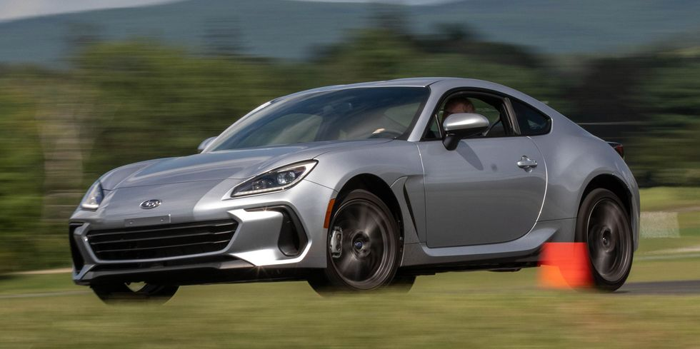
The BRZ sports car is one of today's most exciting, affordable automobiles. Like its Toyota GR86 mechanical twin, it emphasizes driving fun. It's small, light, and nimble. That and ingredients like vivid steering feedback, a standard six-speed manual transmission, and a low seating position cook up entertainment the way only a well-honed compact rear-drive coupe can. It's these traits that earned the BRZ a spot on our 10Best cars list. The BRZ is motivated by Subaru's 228-hp 2.4-liter flat-four engine, which has plenty of power to move this small 2+2 briskly. Inside, the BRZ makes an excellent case for the manual transmission with a confident-feeling, low-effort shifter. The BRZ's responsive handling and impressive cornering grip practically beg you to take it to an autocross weekend. But the BRZ is also surprisingly practical, with plenty of useful interior storage cubbies and a rear jump seat—much like the one in the Porsche 911—capable of hauling a small fry or bags of groceries. In fact, if you fold down the rear seat, there should even be enough room to fit a second set of sticky tires, should that autocross weekend beckon
Subaru BRZ
The BRZ sports car is one of today's most exciting, affordable automobiles. Like its Toyota GR86 mechanical twin, it emphasizes driving fun. It's small, light, and nimble. That and ingredients like vivid steering feedback, a standard six-speed manual transmission, and a low seating position cook up entertainment the way only a well-honed compact rear-drive coupe can. It's these traits that earned the BRZ a spot on our 10Best cars list. The BRZ is motivated by Subaru's 228-hp 2.4-liter flat-four engine, which has plenty of power to move this small 2+2 briskly. Inside, the BRZ makes an excellent case for the manual transmission with a confident-feeling, low-effort shifter. The BRZ's responsive handling and impressive cornering grip practically beg you to take it to an autocross weekend. But the BRZ is also surprisingly practical, with plenty of useful interior storage cubbies and a rear jump seat—much like the one in the Porsche 911—capable of hauling a small fry or bags of groceries. In fact, if you fold down the rear seat, there should even be enough room to fit a second set of sticky tires, should that autocross weekend beckon
Porsche 911
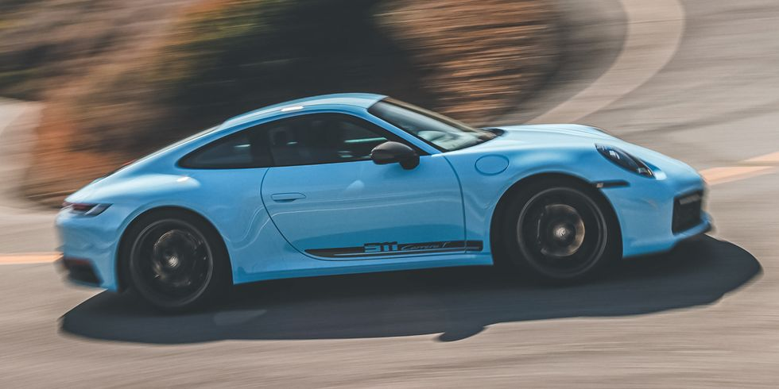
If you close your eyes and picture a Porsche, it's likely that the 911 renders first in your imagination. This rear-engined fastback is a legend—and for good reason. Make that many reasons. For decades it has been a benchmark for performance and handling and feel, inspiring rivals such as the Aston Martin Vantage, the Audi R8, and the Maserati MC20, to name a few. The "standard" 911 sticks to its roots with a set of twin-turbo flat-six engines that have been tuned for up to 473 horsepower. Higher-performance Turbo and GT3 models are available—this is Porsche, of course—but we review those cars separately. Most 911 models have rear-wheel drive but all-wheel drive is available. Coupe, cabriolet convertible, and Targa body styles are offered, and they have a cabin that is comfortable for two adults whether it's been decked out in luxuries or left bone stock. The 911's superiority stems not only from its lofty performance capabilities but also from the fact that it's comfortable enough to live with on a daily basis.
Porsche 911 GT3 / GT3 RS
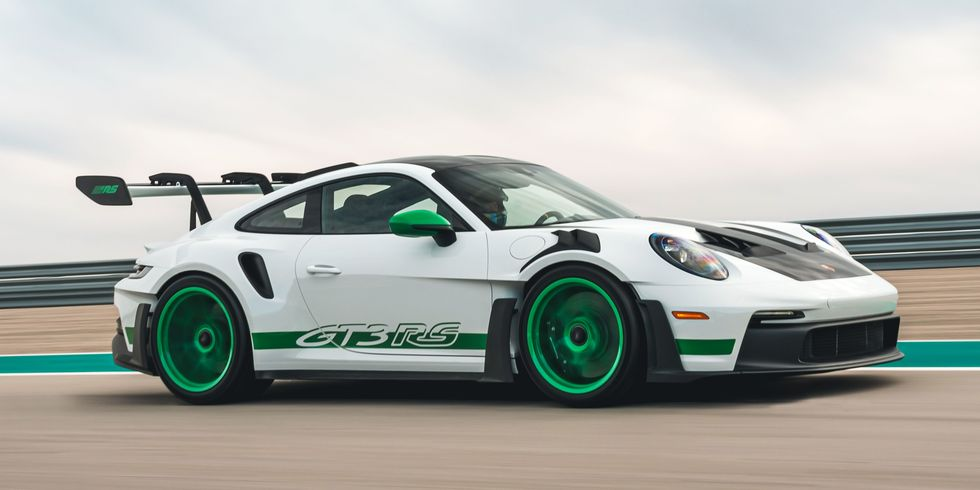
Simply put, the 2023 Porsche 911 GT3 and the all-out track-attack GT3 RS are utterly transcendent, blending everything we love about the standard 911 with otherworldly performance, uncompromised driving enjoyment, and hot-lap capability. A naturally aspirated 4.0-liter flat-six engine makes demonic sounds as it howls up to its 9000 rpm redline, producing 502 horsepower along the way in the GT3 and GT3 Touring. That same engine is twisted to 518 horsepower in the new GT3 RS, but it's that model's wild race-car aerodynamic elements—ideas cribbed from GT and Formula 1 race cars—that comprise its major engineering advancements. A six-speed manual is standard in GT3 models but we've proven the optional seven-speed PDK automatic is quicker, as it shifts quicker than a human and seems to be linked to the driver's cerebral cortex. The GT3 RS comes only with the PDK gearbox. While the GT3 and GT3 Touring models are designed to thrill on the world's most challenging race courses, they're nearly as supple-riding and easy to live with as the regular 911 when driven on city streets. It's this dual-purpose nature that makes the GT3 one of our favorite sports cars and why it easily earns a place on the highest pedestal of automotive icons. As for the GT3 RS, it's as serious about lap times as a 911 can get and still be licensed. We can't wait to drive it to see if it's too radical a car for anything but track duty.
Porsche 911 Turbo / Turbo S
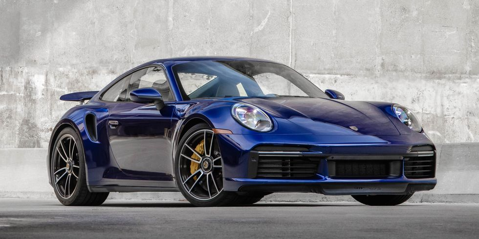
The Porsche 911 Turbo's delivery of speed is nothing short of freaky fast. Its all-wheel-drive launches are courtesy a standard 573-hp 3.7-liter flat-six or a 640-hp version for Turbo S models. It's among the quickest cars we've ever tested, getting to 30 mph in 0.8 seconds, to 60 mph in 2.1 seconds, and through a quarter-mile in just 9.9 seconds at 138 mph. Its rocket-like acceleration is undergirded by its ability to swallow corners in whole gulps thanks to its near-magical handling, amazing steering feel, and huge amount of grip. Although the 911 Turbo doesn't offer a manual transmission, the eight-speed dual-clutch automatic is quicker and smarter than us anyway. More time with both hands at the wheel is a good idea with power like this. While we love the rear-drive 473-hp 911 with a manual transmission, that doesn't mean we'd ever say no to the quicker and more firmly-sprung 911 Turbo and Turbo S.
Toyota GR Supra
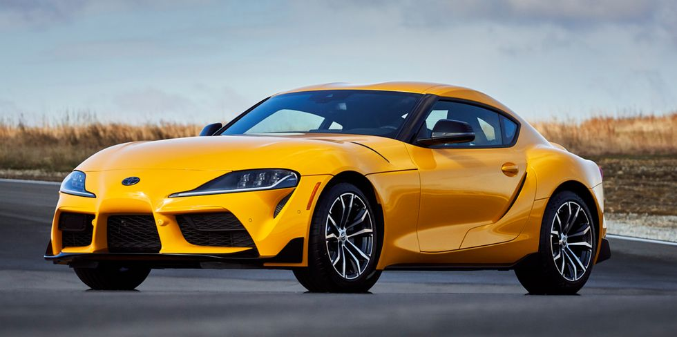
Toyota's halo sports car, the 2023 GR Supra, delivers enough excitement, style, and drama to make up for the brand's more sedate sedans, hatchbacks, and SUVs. Developed and built alongside the BMW Z4 convertible, the GR Supra offers similar build quality and simpler—but still handsome—interior materials inside. The entry-level 255-hp turbocharged four-cylinder provides ample power, but we can't help but adore the ferocious, optional 382-hp turbocharged 3.0-liter BMW inline-six that makes this two-seater fly. Rear-wheel drive is the only setup, and the GR Supra's sure-footed chassis and sharp steering enable it to come alive on twisty roads and race courses. Sure, it may borrow a little too heavily from the BMW parts bin for some Toyota fanboys, and its sweptback exterior design creates some awfully large blind spots, but even so, the GR Supra remains one of our favorite sports cars. It's a driver's car and an enthusiast's delight, making it a no-brainer for our annual 10Best cars list.
Toyota GR86
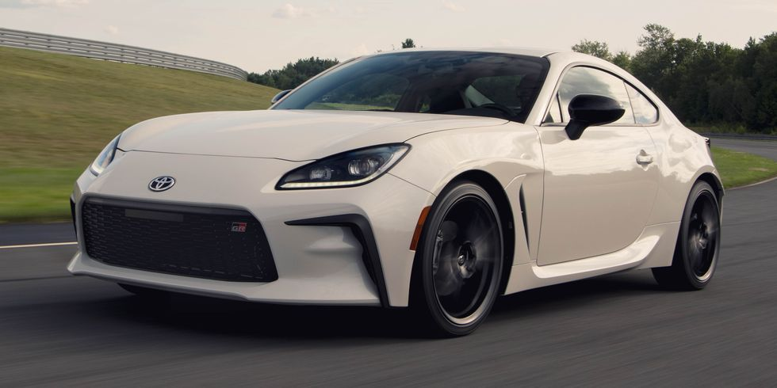